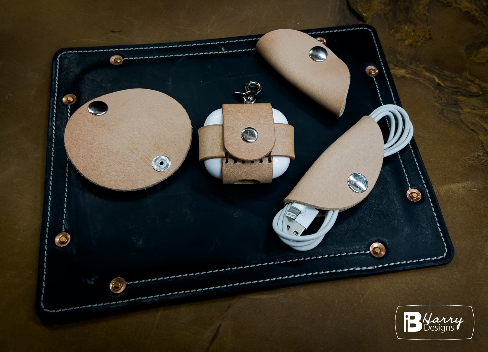

Wallets, travel, watch bands, and bags
Leather that earns its marks.
We are a husband and wife team working out of our shop in Salt Lake City. Every wallet, bag, and strap starts as a single hide on the bench and leaves finished by our own hands.


Stitched by hand
Two needles, one thread
Most of our pieces are stitched entirely by hand with waxed Ritza 25 Tiger Thread. Long seams go through the machine, but every line you actually see is saddle stitched by hand, so a break in one stitch does not unravel the run.
The leather
Chrome tan, veg tan, and Horween
Three families of leather, and each one behaves differently on the bench. Chrome tan is soft and takes colour easily. Vegetable tan is firmer and darkens with age. Horween is the tannery people ask for by name. We pick the one that suits the piece.
Made to last
Built to be repaired
Thread, hardware, and edges can all be rebuilt. When a piece wears out we would rather fix it than sell you a new one.
From the bench
Recent work


The studio
A husband and wife team
We are a husband and wife duo working out of our shop in Salt Lake City. We cut, stitch, and finish here on the bench, one piece at a time, and we live life in the process. Nothing leaves the shop that we would not carry ourselves.
Custom work is welcome. If you have a shape in mind that is not on the site, send it over.
More about us